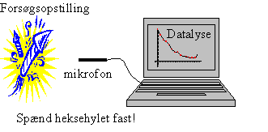
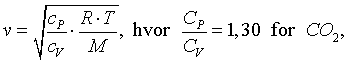
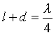
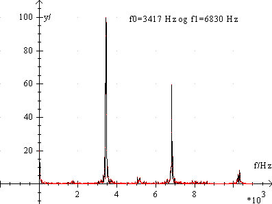
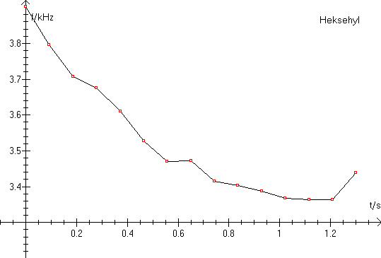

Formålet er at bestemme forbrændingstemperaturen af et heksehyl.
Til forsøget benyttes et eller flere heksehyl, en pc med programmet
Datalyse.

Mål den indvendige diameter i heksehylet. Tag lunden ud og mål med lunden afstanden fra rørets åbne ende til krudtet.
I programmet Datalyse vælges apparatet lydkort og mål lyd. Indstil antal målinger til fx 50000 eller 100000. Afprøv måleproceduren ved at klikke på mål og samtidigt sige som et heksehyl. Efter denne øvelse går vi til heksehylet. Anbring fx mikrofonen i vindueskarmen. Antænd heksehylet og smid det på jorden. Klik straks på mål. Antændes heksehylet indendørs, skal det være fastspændt i et stativ.
Mål igen længden af hullet i heksehylet og hullets diameter. Du kan fx sprætte det op og måle længden af det sodsværtede stykke. Gem målingen på harddisk eller diskette.Slet eventuelt nogle lydmålinger i starten og slutningen af målingen, hvor der ikke hyles. Du kan undersøge dette ved at bladre spektret igennem med pilene PageUp og PageDown. Husk, at gemme målingen igen. Prøv at spille målingen og giv et bud på, om frekvensen stiger eller falder.
Under forbrændingen dannes en stående lydbølge i et halvåbent rør. I Datalyse beregnes frekvensen af denne stående bølge. Vælg beregn »fourier« og vælg i denne menu »Scan (t, f)-spektrum til memo«. Herved udvælges fx de første 2024 (eller dit valg) måleværdier og frekvensen beregnes i dette tidsrum. Så vælges de næste 2024 målinger og frekvensen beregnes osv.
Kopi memoen til tabellen og vælg graf i tabellen. Nu skulle du gerne have en
graf for frekvenserne som funktion af tiden. Giv en fortolkning af grafen.
Udregn temperaturen i heksehylet ved start og slut, idet du går ud fra, at lydens hastighed i luft er givet ved

R= 8,31J/(mok·K), T er den absolutte temperatur og M er middelmolarmassen af molekylerne i gassen.
Længden af den stående bølge er

l er længden af røret og mundingsusikkerheden d sættes lig rørets radius.
Stående lydbølger i halvåbne rør forekommer mange andre steder. Giv nogle eksempler.
I de små gule heksehyl, som sælges for nogle få kroner pr. 100 stk. op mod nytår, består reaktionsblandingen af kaliumperchlorat og kaliumhydrogenphthalat. Reaktionsskema for forbrændingen er:
15 KClO4 + 4 KC8H5O4 ® 15 KCl + 2 K2CO3 + 30 CO2 + 10 H2O
|
|
|
|
15* 8 ned = 120 ned
4*30 op = 120 op
Vis vha. ovenstående reaktionsskema, at middelmolarmassen er M = 0,0375 kg/mol.
De lydeffekter, der fremkommer ved fyrværkeri, er hovedsagelig knald og brag
fra eksplosioner eller fløjt og hyl fra hylesatser. Visse satser skal
indesluttes, for at de eksploderer med et brag, mens andre eksploderer uden at være
indesluttet. Alle satser, hvor der frigøres store gasmængder, vil eksplodere
med et brag, hvis de indesluttes. Dels giver det et brag, når indeslutningen går
i stykker, dels kan selve den meget hurtige kemiske reaktion medføre en trykbølge,
der af vore ører opfattes som et brag. Mange blandinger vil reagere med en større
reaktionshastighed ved den trykopbygning, der finder sted ved en indeslutning
(en »fordæmning« som det hedder i fagsproget).
En del professionelle fyrværkere opfatter knald og brag som et nødvendigt
onde ved affyring af fyrværkeri, altså ikke en effekt, man direkte går efter.
Andre anvender kraftige knaldsatser (en »salut«) som indledning og afslutning
på et professionelt fyrværkeri. Om ikke andet tjener indledningsknaldene til
at tiltrække folks opmærksomhed mod det, der derefter foregår.
Omkring år 1900 opdagede man, at visse satser, der blev sammenpresset i et rør, brændte med en fløjtende lyd. Dette fik militær anvendelse, idet rør med disse hylesatser blev sendt ind bag fjendens linier for at virke demoraliserende på fjenden. Siden har de også fundet anvendelse i fyrværkeri, enten alene som heksehyl eller som ledsagende effekt til andet fyrværkeri. I en hylesats er oxidationsmidlet kaliumperchlorat, mens reduktionsmidlet er kaliumsaltet af en aromatisk syre som picrinsyre, gallussyre, benzoesyre, salicylsyre eller phthalsyre (udtales ftalsyre - prøv det!). I de små gule heksehyl, som sælges for nogle få kroner pr. 100 stk. op mod nytår, består reaktionsblandingen af kaliumperchlorat og kaliumhydrogenphthalat. Reaktionsskema for forbrændingen er:
15 KClO4 + 4 KC8H5O4 ® 15 KCl + 2 K2CO3 + 30 CO2 + 10 H2O
Hvis satsen ikke er sammenpresset i hylsteret, vil den eksplodere. Det er derfor, et fladtrykt heksehyl kan eksplodere ved antændelsen. Nærmere undersøgelser har vist, at der i den sammenpressede sats foregår en pulserende forbrænding, eller nærmest en række småeksplosioner med den frekvens, man kan høre heksehylet brænde med. Denne frekvens afhænger af afstanden fra forbrændingszonen til den frie ende af heksehylet, og man kan let høre, at frekvensen bliver lavere under afbrændingen. Den fysiske forklaring på hyletonen er følgende: når der sker en lille eksplosion i reaktionszonen, vil trykbølgen vandre gennem røret og reflekteres tilbage fra enden af paprøret. Når trykbølgen rammer reaktionszonen, vil der ske endnu en lille eksplosion, idet reaktionshastigheden er trykafhængig. Der opstår altså en stående bølge i den halvåbne luftsøjle.
Radius 5mm, længde før 2,9 cm, længde efter 3,8 cm.

Øverst et enkelt frekvensspektrum ca. midt i hylet. Bemærk, at der ikke bare er en ¼ bølge i røret, men også ½bølger og helbølger.

Se også forsøg med stående bølger i paprør.